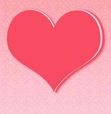

说出你的爱
Speak Loudly You Love
爱情

马克思说：“爱情的本质是男女之间基于一定的物质条件和共同的人生理想，在内心对对方的最真挚的仰慕，并渴望成为终身伴侣的强烈、稳定、专一的感情。”
爱情是爱中的一种。它是因爱生情。重点是情。爱情是什么？爱情是男女之间的一种感情。爱一个人意味着什么呢？这意味着为他的幸福而高兴，为使他能更幸福而去做需要做的一切，并从中得到快乐。在爱情的问题上，往往没有谁对谁错，爱情只是一种缘分。缘至则聚，缘尽则散。能够结为夫妻并相伴到地老天荒，那是珍贵的不尽缘。在对的时间遇见对的人不容易，因此，爱一个人就说出来，让她知道你爱她。
在汉文化里，爱就是网住对方的心，具有亲密、情欲和承诺、依恋、情感的属性，并且对这种关系的长久性持有信心，也能够与对方分享私生活。在爱的情感基础上，除了爱的跨文化差异，随着时间的推移，关于爱情的观念也发生了很大的变化（在不同的民族文化也发展出不同的特征）。 爱情是人性的组成部分，狭义上指情侣之间的感情，广义上还包括朋友之间的爱情和亲人之间的爱情（爱的感情）。
化学物质触发是负责热恋和长期附着的爱情似乎更特别是两人参与，而不是所涉及的特定的人的性活动。 脑科学表明人们坠入爱河的时候，大脑不断释放出一组特定的化学物质，包括神经递质激素（多巴胺、5-羟色胺）、去甲肾上腺素、和由苯丙胺（外语音译又叫做安非他明）释放相同的化合物。当内啡呔产生后人类或可进入婚姻殿堂。